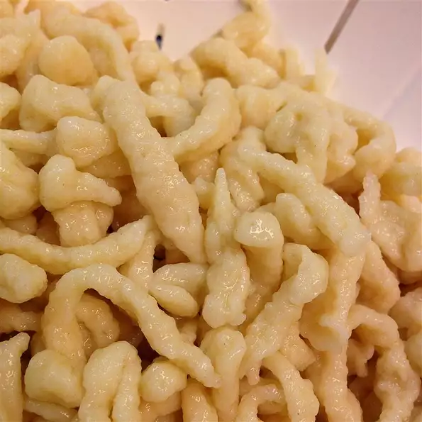

< < Go back
Enchilada Lasagna

Description
Homemade, fluffy spaetzle perfectly paired with soup or chicken paprikash!
Ingredients
- 3 cups all-purpose flour
- 1 cup cold water
- 5 eggs, beaten
- 1 teaspoon salt
- ¼ teaspoon baking powder
Steps
- Mix flour, water, eggs, salt, and baking powder in a bowl until blended.
- Bring a large pot of water to a boil. Place part of the dough into a spaetzle press or potato ricer. Press dough into boiling water; cook and stir until pasta floats, about 2 minutes. Remove with a slotted spoon and rinse with water; repeat with remaining dough.